<!doctype html>
<html lang="fr">
  <head>
    <meta charset="utf-8" />
    <meta name="viewport" content="width=device-width, initial-scale=1" />
    <title>Charpentier · accueil des testeurs</title>
    <link rel="stylesheet" href="../../packages/core/src/styles/base.css" />
    <style>
      /* Maquette de l'accueil des testeurs (PLAN 4.11, DESIGN §4.8 « Accueil »).
         ?forme=pages&page=1…7 (une page à la fois) ou ?forme=lettre (une seule page qui défile) ;
         &sombre. Les images sont des captures de l'app réelle (accueil/img/). */
      body {
        margin: 0;
        background: var(--ch-bg);
        color: var(--ch-ink);
        font-family: var(--ch-font-ui);
      }
      .welcome {
        min-height: 100vh;
        box-sizing: border-box;
        display: flex;
        flex-direction: column;
        padding: 22px 36px 26px;
      }
      .top {
        display: flex;
        align-items: center;
        gap: 12px;
        color: var(--ch-muted);
        font: 12.5px var(--ch-font-ui);
      }
      .top img {
        width: 30px;
        height: 30px;
        margin: -3px 0;
      }
      .top .kicker {
        color: var(--ch-author);
        font: 500 13.5px var(--ch-font-text);
        font-variant-caps: all-small-caps;
        letter-spacing: 0.08em;
      }
      .top .skip {
        margin-left: auto;
      }
      .top kbd,
      .nav kbd,
      .keys kbd {
        color: var(--ch-faint);
        font: inherit;
      }
      .stage {
        flex: 1;
        display: grid;
        grid-template-columns: minmax(0, 1.55fr) minmax(0, 1fr);
        gap: 48px;
        align-items: center;
        max-width: 1280px;
        width: 100%;
        margin: 0 auto;
        padding: 18px 0;
      }
      .shot {
        border-radius: var(--ch-radius-lg);
        box-shadow: var(--ch-raise);
        padding: 10px;
        background: var(--ch-bg);
      }
      .shot img,
      .shot svg {
        display: block;
        width: 100%;
        border-radius: 8px;
      }
      .text h2 {
        margin: 0 0 14px;
        font: 400 32px/1.2 var(--ch-font-text);
      }
      .text p {
        margin: 0 0 14px;
        color: var(--ch-ink-2);
        font: 17px/1.6 var(--ch-font-text);
      }
      .text p.never {
        padding-left: 14px;
        box-shadow: inset 2px 0 0 var(--ch-mentor);
        color: var(--ch-ink);
      }
      .keys {
        display: flex;
        flex-wrap: wrap;
        gap: 6px 16px;
        margin-top: 18px;
        color: var(--ch-muted);
        font: 12.5px var(--ch-font-ui);
      }
      .nav {
        display: flex;
        align-items: center;
        gap: 14px;
        max-width: 1280px;
        width: 100%;
        margin: 0 auto;
      }
      .dots {
        display: flex;
        gap: 8px;
        margin-right: auto;
      }
      .dots i {
        width: 9px;
        height: 9px;
        border-radius: 50%;
        box-shadow: var(--ch-inset);
      }
      .dots i.on {
        background: var(--ch-author);
        box-shadow: none;
      }
      .dots i.done {
        background: var(--ch-faint);
        box-shadow: none;
      }
      .nav .ch-btn {
        padding: 8px 16px;
        font-size: 14px;
      }
      .nav .main {
        color: var(--ch-author);
      }
      .shot {
        position: relative;
      }
      .mark {
        position: absolute;
        transform: translate(-50%, -50%);
        display: grid;
        place-items: center;
        width: 26px;
        height: 26px;
        border-radius: 50%;
        background: var(--ch-ink);
        color: var(--ch-bg);
        font: 600 13px/1 var(--ch-font-ui);
        box-shadow: 0 0 0 4px var(--ch-bg);
      }
      .console {
        padding: 70px 26px 30px;
      }
      .console .lab {
        position: absolute;
        top: 18px;
        transform: translateX(-50%);
        text-align: center;
        color: var(--ch-ink);
        font: 13px/1.35 var(--ch-font-ui);
        white-space: nowrap;
      }
      .console .lab small {
        display: block;
        color: var(--ch-muted);
        font-size: 12px;
      }
      .console .lab::after {
        content: '';
        position: absolute;
        left: 50%;
        top: 40px;
        width: 1px;
        height: 30px;
        background: var(--ch-faint);
      }
      .text kbd {
        padding: 1px 6px;
        border-radius: 5px;
        box-shadow: var(--ch-raise-s);
        color: var(--ch-ink-2);
        font: 12.5px var(--ch-font-ui);
      }
      .steps {
        margin: 0 0 14px;
        padding: 0;
        list-style: none;
        counter-reset: s;
      }
      .steps li {
        display: flex;
        gap: 12px;
        margin-bottom: 8px;
        color: var(--ch-ink-2);
        font: 16px/1.5 var(--ch-font-text);
      }
      .steps li b {
        flex: none;
        display: grid;
        place-items: center;
        width: 22px;
        height: 22px;
        margin-top: 2px;
        border-radius: 50%;
        background: var(--ch-ink);
        color: var(--ch-bg);
        font: 600 12px/1 var(--ch-font-ui);
      }
      .diagram text {
        font: 14px var(--ch-font-ui);
        fill: var(--ch-ink);
      }
      .diagram .small {
        font-size: 12px;
        fill: var(--ch-muted);
      }
      /* La lettre : une seule colonne qui défile. */
      .letter {
        max-width: 760px;
        margin: 0 auto;
        padding: 56px 24px 80px;
      }
      .letter > h1 {
        margin: 12px 0 6px;
        font: 400 34px/1.2 var(--ch-font-text);
      }
      .letter section {
        margin-top: 46px;
      }
      .letter section .shot {
        margin-top: 16px;
      }
      @media (max-width: 760px) {
        .welcome {
          padding: 16px;
        }
        .stage {
          grid-template-columns: 1fr;
          gap: 22px;
          align-items: start;
          align-content: start;
        }
        .text h2 {
          font-size: 26px;
        }
        .text p {
          font-size: 16px;
        }
        .nav .prev {
          display: none;
        }
        .nav kbd {
          display: none;
        }
      }
    </style>
  </head>
  <body>
    <div id="root"></div>
    <script>
      const P = new URLSearchParams(location.search);
      const dark = P.has('sombre');
      if (dark) document.documentElement.dataset.theme = 'dark';
      const img = (n) => ``;
      const DIAGRAM = `<svg class="diagram" viewBox="0 0 640 400" role="img" aria-label="Où vont vos textes">
        <defs><marker id="a" viewBox="0 0 10 10" refX="9" refY="5" markerWidth="7" markerHeight="7" orient="auto"><path d="M0 0 10 5 0 10z" fill="var(--ch-muted)"/></marker></defs>
        <rect width="640" height="400" fill="var(--ch-bg)"/>
        <g><rect x="30" y="150" width="170" height="100" rx="14" fill="var(--ch-bg)" style="filter:drop-shadow(3px 3px 5px var(--ch-shade)) drop-shadow(-3px -3px 5px var(--ch-highlight))"/>
        <text x="115" y="192" text-anchor="middle">Votre appareil</text><text class="small" x="115" y="216" text-anchor="middle">tout y est, même hors ligne</text></g>
        <g><rect x="250" y="150" width="170" height="100" rx="14" fill="var(--ch-bg)" style="filter:drop-shadow(3px 3px 5px var(--ch-shade)) drop-shadow(-3px -3px 5px var(--ch-highlight))"/>
        <text x="335" y="186" text-anchor="middle">Serveur de Pierre</text><text class="small" x="335" y="208" text-anchor="middle">charpentier.chatel.pm</text><text class="small" x="335" y="228" text-anchor="middle">et ses sauvegardes</text></g>
        <g><rect x="470" y="150" width="140" height="100" rx="14" fill="var(--ch-bg)" style="filter:drop-shadow(3px 3px 5px var(--ch-shade)) drop-shadow(-3px -3px 5px var(--ch-highlight))"/>
        <text x="540" y="192" text-anchor="middle" fill="var(--ch-mentor)" style="fill:var(--ch-mentor)">Anthropic</text><text class="small" x="540" y="216" text-anchor="middle">les passages lus</text></g>
        <path d="M200 192 H246" stroke="var(--ch-muted)" stroke-width="1.6" marker-end="url(#a)"/><path d="M250 210 H204" stroke="var(--ch-muted)" stroke-width="1.6" marker-end="url(#a)"/>
        <path d="M420 200 H466" stroke="var(--ch-mentor)" stroke-width="1.6" stroke-dasharray="5 4" marker-end="url(#a)"/>
        <text class="small" x="223" y="140" text-anchor="middle">synchronisation</text>
        <text class="small" x="445" y="122" text-anchor="middle">le Compagnon,</text><text class="small" x="445" y="140" text-anchor="middle">sous le compte de Pierre</text>
      </svg>`;
      const CONSOLE = `${img('console')}
        <span class="lab" style="left:${26 + 0.948 * 8}px;left:calc(26px + (100% - 52px) * 0.08)">Le manuscrit<small>⌘J</small></span>
        <span class="lab" style="left:calc(26px + (100% - 52px) * 0.5)">Que voulez-vous faire ?<small>⌘K</small></span>
        <span class="lab" style="left:calc(26px + (100% - 52px) * 0.92)">Le Compagnon<small>⌘L</small></span>`;
      const PAGES = [
        {
          k: 'Bienvenue',
          t: 'Un atelier pour écrire votre roman',
          p: [
            'Charpentier vous accompagne pendant que vous écrivez : il range ce que vous inventez, vérifie la cohérence, explique le métier.',
            'Sept choses à savoir avant de commencer. Deux minutes ; vous pourrez tout relire plus tard, par la ligne de commande : « Revoir l’accueil ».',
          ],
          img: 'ecrire',
        },
        {
          k: 'La console',
          t: 'Trois touches, en bas de la page',
          p: [
            'Tout part de là. À gauche, le livre ouvre le manuscrit ; à droite, le compas ouvre le Compagnon ; au milieu, « Que voulez-vous faire ? ».',
            'Une touche reste enfoncée tant que son panneau est ouvert ; un second clic le referme. Les noms apparaissent quand la souris approche.',
          ],
          keys: [
            '<kbd>⌘J</kbd> le manuscrit',
            '<kbd>⌘K</kbd> la ligne de commande',
            '<kbd>⌘L</kbd> le Compagnon',
          ],
          console: true,
        },
        {
          k: 'Scène par scène',
          t: 'Une scène à la fois',
          p: [
            'Votre roman se compose de chapitres, et chaque chapitre de scènes. Vous écrivez une scène à la fois, sur une page calme.',
            'Le livre, en bas à gauche, ouvre le manuscrit : on y passe d’une scène à l’autre, on y crée, déplace et renomme.',
          ],
          keys: [
            '<kbd>⌘J</kbd> le manuscrit',
            '<kbd>⌘N</kbd> nouvelle scène',
            '<kbd>⇧⌘P</kbd> le plan du roman',
          ],
          img: 'manuscrit',
        },
        {
          k: 'L’Atelier',
          t: 'Ce que vous savez de votre roman',
          p: [
            'Personnages, structure, règles de votre monde : des fiches que vous remplissez, ou que le Compagnon vous propose d’après ce que vous écrivez.',
            'Rien n’y entre sans vous : une proposition est en relief ; vous la validez, ou vous l’écartez.',
          ],
          keys: ['<kbd>⌘E</kbd> écrire ou l’Atelier'],
          img: 'atelier',
        },
        {
          k: 'Le Compagnon',
          t: 'Il lit par-dessus votre épaule',
          p: [
            'Il signale une incohérence, explique un point de métier, pose une question. Vous réglez combien il intervient, du discret au tuteur.',
          ],
          never:
            'Il n’écrit jamais une ligne de votre roman. Au plus une phrase d’exemple, que vous insérez vous-même si vous le voulez.',
          keys: ['<kbd>⌘L</kbd> ses remarques et la conversation'],
          img: 'compagnon',
        },
        {
          k: 'Essayer sans perdre',
          t: 'Variantes et points de restauration',
          p: [
            'Une scène peut avoir plusieurs variantes : essayez une autre fin sans effacer la première, gardez celle que vous préférez.',
            'L’app garde aussi des points de restauration : vous revenez d’un geste à la scène d’il y a une heure. Rien n’est jamais perdu.',
          ],
          keys: [
            '<kbd>⇧⌘N</kbd> nouvelle variante',
            '<kbd>V</kbd> les variantes, <kbd>H</kbd> la restauration, dans le plan',
          ],
          img: 'variantes',
        },
        {
          k: 'La ligne de commande',
          t: 'Tout est à un mot',
          steps: [
            'Cliquez sur « Que voulez-vous faire ? », ou <kbd>⌘K</kbd>.',
            'Tapez un mot : « variante », « Hélène », « chapitre 3 ». Les actions, les fiches et les scènes qui correspondent montent.',
            'Choisissez avec <kbd>↑</kbd> <kbd>↓</kbd>, puis <kbd>⏎</kbd>.',
          ],
          p: [
            'Chaque action y est, avec son raccourci affiché à droite : on l’apprend en passant. Commencez par <kbd>#</kbd> pour une scène, <kbd>@</kbd> pour une fiche. Et quoi qu’il arrive, Échap revient au texte.',
          ],
          img: 'commande-zoom',
          marks: [
            { x: 3.5, y: 89, n: 1 },
            { x: 14, y: 89, n: 2 },
            { x: 70, y: 37, n: 3 },
          ],
        },
        {
          k: 'Vos textes',
          t: 'Où sont vos textes, et qui les lit',
          p: [
            'Sur cet appareil d’abord : vous écrivez même hors ligne. Puis sur le serveur de Pierre Chatel, qui vous a invité, et dans ses sauvegardes. Pierre administre ce serveur.',
            'Le Compagnon envoie à Anthropic les passages qu’il lit, sous le compte de Pierre, pour vous répondre.',
          ],
          diagram: true,
          last: true,
        },
      ];
      const forme = P.get('forme') || 'pages';
      const root = document.getElementById('root');
      const body = (pg) =>
        `${pg.steps ? `<ol class="steps">${pg.steps.map((x, i) => `<li><b>${i + 1}</b><span>${x}</span></li>`).join('')}</ol>` : ''}${pg.p.map((x) => `<p>${x}</p>`).join('')}${pg.never ? `<p class="never">${pg.never}</p>` : ''}${pg.keys ? `<div class="keys">${pg.keys.map((k) => `<span>${k}</span>`).join('')}</div>` : ''}`;
      if (forme === 'pages') {
        const n = Math.min(Math.max(+(P.get('page') || 1), 1), PAGES.length);
        const pg = PAGES[n - 1];
        root.innerHTML = `<div class="welcome">
          <div class="top"><span class="kicker">${pg.k}</span><span>${n} / ${PAGES.length}</span><span class="skip">Passer <kbd>Échap</kbd></span></div>
          <div class="stage"><div class="shot${pg.console ? ' console' : ''}">${pg.diagram ? DIAGRAM : pg.console ? CONSOLE : img(pg.img) + (pg.marks || []).map((m) => `<span class="mark" style="left:${m.x}%;top:${m.y}%">${m.n}</span>`).join('')}</div><div class="text"><h2>${pg.t}</h2>${body(pg)}</div></div>
          <div class="nav"><span class="dots">${PAGES.map((_, i) => `<i class="${i + 1 === n ? 'on' : i + 1 < n ? 'done' : ''}"></i>`).join('')}</span>
            ${n > 1 ? `<button class="ch-btn prev">Précédent <kbd>←</kbd></button>` : ''}
            <button class="ch-btn main">${pg.last ? 'Commencer à écrire' : 'Suivant'} <kbd>${pg.last ? '⏎' : '→'}</kbd></button></div>
        </div>`;
      } else {
        root.innerHTML = `<div class="letter">
          
          <h1>Bienvenue dans Charpentier</h1>
          <p style="color:var(--ch-muted);font:italic 17px/1.5 var(--ch-font-text);margin:0">Un atelier pour écrire votre roman. Sept choses à savoir.</p>
          ${PAGES.slice(1)
            .map(
              (pg) =>
                `<section class="text"><div class="top" style="margin-bottom:8px"><span class="kicker">${pg.k}</span></div><h2>${pg.t}</h2>${body(pg)}<div class="shot${pg.console ? ' console' : ''}">${pg.diagram ? DIAGRAM : pg.console ? CONSOLE : img(pg.img) + (pg.marks || []).map((m) => `<span class="mark" style="left:${m.x}%;top:${m.y}%">${m.n}</span>`).join('')}</div></section>`,
            )
            .join('')}
          <div class="nav" style="margin-top:40px"><span class="dots"></span><button class="ch-btn main">Commencer à écrire <kbd>⏎</kbd></button></div>
        </div>`;
      }
    </script>
  </body>
</html>
